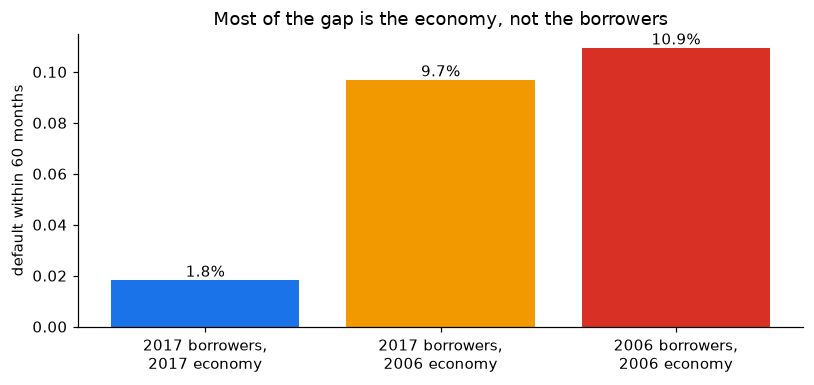

4. Segmenting borrowers: composition versus environment
Banks manage mortgage books by segments of similar borrowers, not loan by loan. This notebook builds segments with two multivariate tools, principal components and k-means, and uses them to split the 2006–2017 default gap into two parts:
composition: 2006 had more risky borrowers;
environment: the same kind of borrower defaulted more in 2006.
pca = PCA().fit(Z)explained = pd.Series(pca.explained_variance_ratio_, index=[f"PC{i+1}"for i inrange(Z.shape[1])])loadings = pd.DataFrame(pca.components_[:3].T, index=features.columns, columns=["PC1", "PC2", "PC3"])display(explained.to_frame("share of variance").T)loadings
PC1
PC2
PC3
PC4
PC5
PC6
share of variance
0.356
0.213
0.177
0.127
0.121
0.007
PC1
PC2
PC3
fico
-0.142
0.617
-0.228
ltv
0.651
0.112
-0.193
cltv
0.652
0.110
-0.190
dti
0.183
-0.178
0.782
rate_premium
0.223
-0.577
-0.151
log_balance
0.218
0.479
0.491
The first component is essentially leverage: loan-to-value and combined loan-to-value move together. The next ones separate credit quality and pricing (credit score against the rate premium) and affordability (debt-to-income, loan size). Three components summarise most of the variation; the six variables are far from independent, which is why a handful of segments can describe the book.
k-means segments
Choosing the number of segments with the silhouette score (computed on a random subsample of 10,000 loans; higher is better):
rng = np.random.default_rng(2026)sample = rng.choice(len(Z), 10_000, replace=False)sil = {k: silhouette_score(Z[sample], KMeans(k, n_init=10, random_state=1).fit_predict(Z[sample])) for k inrange(3, 8)}pd.Series(sil, name="silhouette").to_frame().T
3
4
5
6
7
silhouette
0.178
0.16
0.156
0.152
0.149
K =max(sil, key=sil.get)km = KMeans(K, n_init=20, random_state=1).fit(Z)profile = features.assign(segment=km.labels_).groupby("segment").mean()# Name each segment from its own profile (cluster numbers are arbitrary)names = {profile["fico"].idxmin(): "lower score, higher DTI", profile["ltv"].idxmin(): "large down payment (low LTV)"}names.update({s: "prime, high LTV"for s in profile.index if s notin names})loans["segment"] = pd.Series(km.labels_).map(names).valuesprofile.index = profile.index.map(names)profile["share of loans"] = loans["segment"].value_counts(normalize=True)profile
fico
ltv
cltv
dti
rate_premium
log_balance
share of loans
segment
lower score, higher DTI
690.557
79.948
81.765
39.049
0.298
11.928
0.347
prime, high LTV
763.225
79.711
81.264
34.618
-0.128
12.323
0.444
large down payment (low LTV)
746.754
45.561
46.234
33.110
-0.133
11.815
0.209
The silhouette scores are low for every k (about 0.15–0.18): mortgage borrowers do not form well-separated natural groups, they vary continuously. The segments are therefore a useful partition of the book, the way a risk team uses them, not a discovery of hidden types. The three-segment solution has a clear reading: a lower-score, higher-DTI segment priced above the market; a prime segment with high loan-to-value; and borrowers with a large down payment.
How the two vintages were distributed across segments, and how each segment performed:
mix = pd.crosstab(loans["segment"], loans["vintage"], normalize="columns")mix.columns = [f"share of {c} book"for c in mix.columns]cif = cif_at(loans, months=(60,), by=["vintage", "segment"])["60 months"].unstack("vintage")cif.columns = [f"default within 60 m, {c}"for c in cif.columns]seg = mix.join(cif)seg["ratio 2006 / 2017"] = seg.iloc[:, 2] / seg.iloc[:, 3]seg = seg.join(profile[["fico", "ltv", "dti"]].round(0))seg
share of 2006 book
share of 2017 book
default within 60 m, 2006
default within 60 m, 2017
ratio 2006 / 2017
fico
ltv
dti
segment
large down payment (low LTV)
0.244
0.173
0.042
0.009
4.800
747.0
46.0
33.0
lower score, higher DTI
0.415
0.278
0.179
0.040
4.444
691.0
80.0
39.0
prime, high LTV
0.341
0.549
0.072
0.010
7.285
763.0
80.0
35.0
Splitting the gap
A simple counterfactual answers the question of the project. If the 2006 book had had the 2017 mix of segments, its 60-month default rate would have been the 2006 segment rates weighted by the 2017 mix:
w06, w17 = seg.iloc[:, 0], seg.iloc[:, 1]d06, d17 = seg.iloc[:, 2], seg.iloc[:, 3]actual_06, actual_17 = (w06 * d06).sum(), (w17 * d17).sum()counterfactual = (w17 * d06).sum() # 2006 environment, 2017 borrowersgap = actual_06 - actual_17decomp = pd.Series({"2006 actual (segment-weighted)": actual_06,"2006 environment with 2017 borrowers": counterfactual,"2017 actual (segment-weighted)": actual_17,"share of the gap due to composition": (actual_06 - counterfactual) / gap,"share of the gap due to environment": (counterfactual - actual_17) / gap,})decomp
2006 actual (segment-weighted) 0.109
2006 environment with 2017 borrowers 0.097
2017 actual (segment-weighted) 0.018
share of the gap due to composition 0.137
share of the gap due to environment 0.863
dtype: float64
fig, ax = plt.subplots(figsize=(7.5, 3.6))bars = [actual_17, counterfactual, actual_06]labels = ["2017 borrowers,\n2017 economy", "2017 borrowers,\n2006 economy", "2006 borrowers,\n2006 economy"]ax.bar(labels, bars, color=[BLUE, "#f29900", RED])for i, b inenumerate(bars): ax.text(i, b, f"{b:.1%}", ha="center", va="bottom")ax.set_ylabel("default within 60 months")ax.set_title("Most of the gap is the economy, not the borrowers")fig.tight_layout()fig.savefig("../figures/composition_vs_environment.png", bbox_inches="tight")plt.show()

Changing the borrowers to the safer 2017 mix lowers the 2006 default rate only a little; almost all of the gap remains. The 2006 vintage did not fail mainly because it lent to worse borrowers, but because ordinary borrowers met a collapse in house prices. The Cox model of notebook 3 reached the same conclusion with a different tool (a hazard ratio of about 4.6 for the vintage after adjusting for the borrower), which is the kind of agreement a validator looks for.
Limits: segments use continuous variables only (purpose, occupancy and number of borrowers are left to the Cox model), and k-means assumes roughly spherical clusters in the standardised space. The decomposition is descriptive: “environment” is everything that differs between the vintages beyond these six variables, including underwriting practices the data do not record.